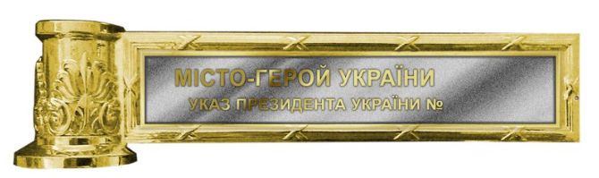

24 березня 2022 року з метою відзначення подвигу, масового героїзму та стійкості громадян, виявлених у захисті своїх міст під час відсічі збройної агресії Російської Федерації проти України
Місту, якому присвоєно почесну відзнаку, вручаються атрибути відзнаки — основа верхівки древка прапора міського населеного пункту та стрічка почесної відзнаки. Основа верхівки древка виготовляється зі сплавів міді з гальванічним покриттям у формі циліндра, прикрашеного рельєфним рослинним орнаментом з припаяною до нього прямокутною пластиною. На пластині рельєфні написи: «МІСТО-ГЕРОЙ УКРАЇНИ ________________________» і «УКАЗ ПРЕЗИДЕНТА УКРАЇНИ № _________». Висота циліндра 44 мм, діаметр — 39 мм. Ширина пластини 36 мм, довжина — 144 мм. Стрічка почесної відзнаки шовкова муарова, зі смужками синього і жовтого кольорів. Ширина стрічки 28 мм, ширина кожної смужки 14 мм. Довжина стрічки 2500 мм. Кінці стрічки прикрашено золотавими китицями. Основа верхівки древка розміщується на древку прапора міського населеного пункту між полотнищем і верхівкою, стрічка почесної відзнаки кріпиться нижче. Прапор міського населеного пункту з почесною відзнакою розміщується на видному місці у залі засідань міської (селищної) ради або у робочому кабінеті міського (селищного) голови.
